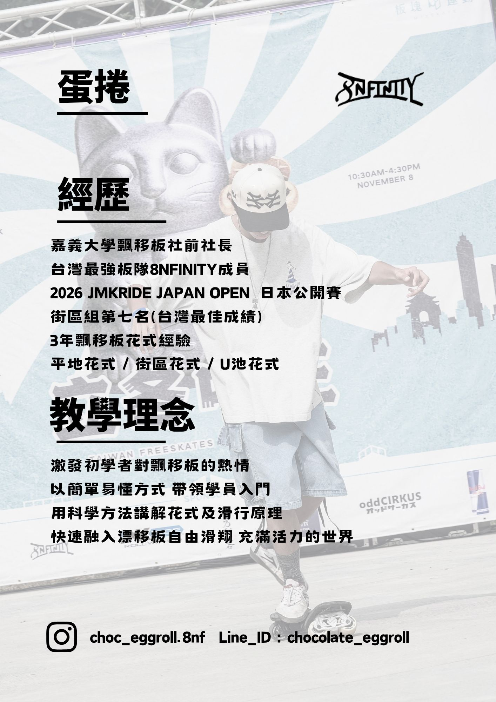
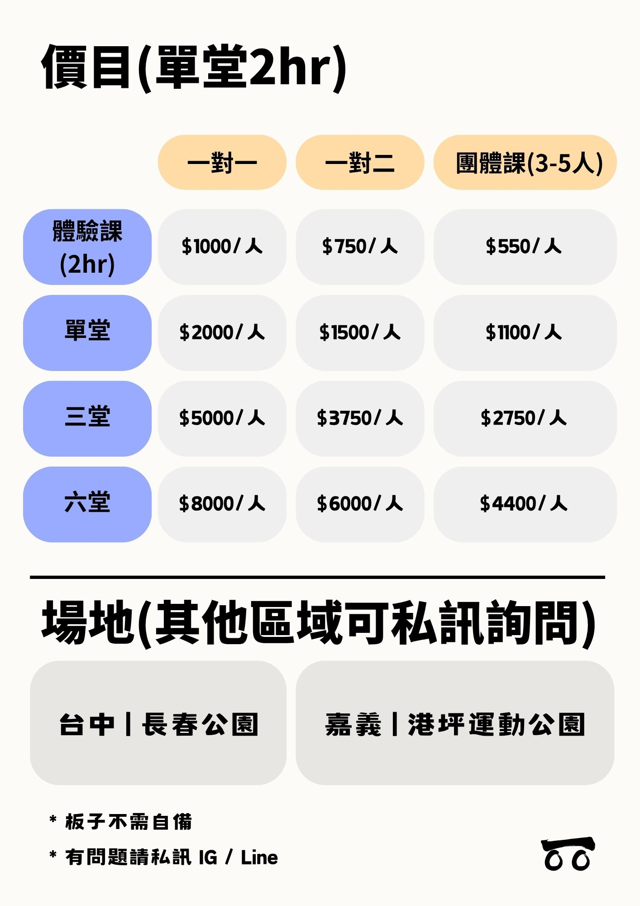

入門
- 認識飄移板構造
- 避免運動傷害與風險認知
- 平衡與滑行訓練
- 滑行加速原理講解
- 基本上板動作
帶你進入飄移板自由滑行的世界


飄移板是一種兩腳分開的板類運動，不僅是最難的輪滑類運動，也是體積最小的板類運動

大家好，我是蛋捲！ 我是 8NFINITY 板隊的成員， 希望透過教學讓更多人認識飄移板。

可以！課程會從基礎平衡開始教學。
課程將根據學員實力進行客製化調整，可學習平地、街區和U池等等花式
將由教練與學生協調是否延期。